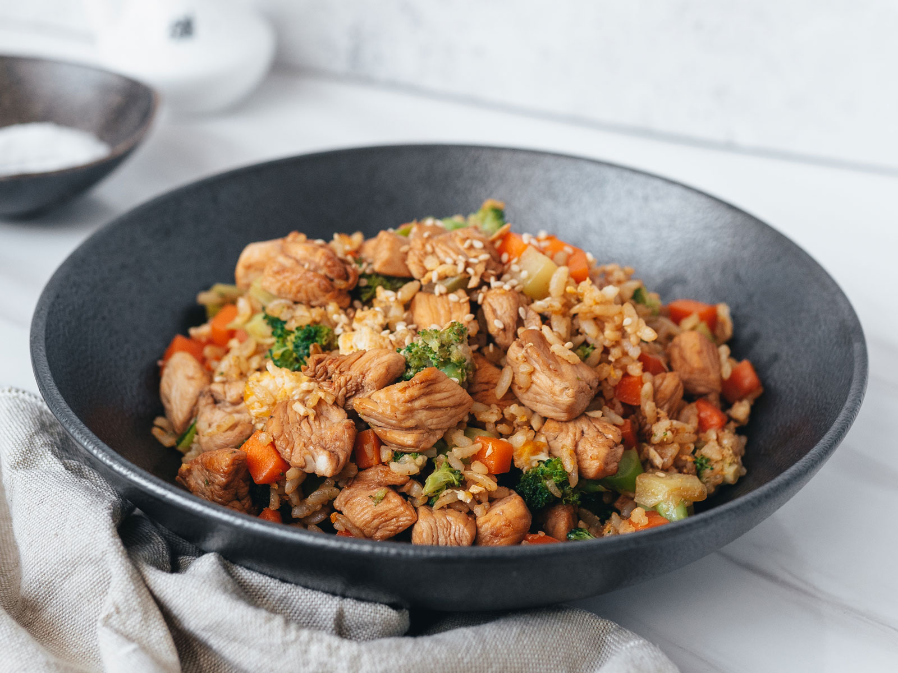

Chicken Fried Rice Recipe

Description
Indulge in the savory delight of this Chicken Fried Rice recipe. This Asian-inspired dish
features tender pieces of chicken breast stir-fried to perfection, complemented by a colorful
medley of crisp vegetables like carrots, bell peppers, and peas, all expertly combined with
fluffy, cooked rice. The secret sauce, a harmonious blend of soy sauce, garlic, ginger, and
sesame oil, infuses every grain of rice with irresistible flavor. Topped with chopped green
onions and a sprinkle of sesame seeds for that finishing touch, this Chicken Fried Rice is
a satisfying and wholesome meal that effortlessly balances protein and veggies in a symphony
of taste and texture. It's a quick and delicious way to bring the flavors of your favorite
Asian takeout straight to your own kitchen.
Ingredients
- 2 boneless, skinless chicken breasts, cut into small pieces
- 2 tablespoons soy sauce
- 1 tablespoon rice vinegar
- 1 teaspoon sesame oil
- 1 teaspoon cornstarch
- 1/2 teaspoon black pepper
- 2 cups cooked jasmine rice (day-old rice works best)
- 2 tablespoons vegetable oil
- 2 cloves garlic, minced
- 1 small onion, diced
- 1 cup frozen peas and carrots, thawed
- 2 large eggs, lightly beaten
- 3 tablespoons soy sauce (adjust to taste)
- 1/2 teaspoon ground ginger
- 1/2 cup cooked and chopped broccoli (optional)
- 2 green onions, thinly sliced
- Salt and pepper to taste
Steps
- In a bowl, combine the soy sauce, rice vinegar, sesame oil, cornstarch, and black pepper.
- Add the chicken pieces to the marinade and toss to coat. Allow the chicken to marinate for at
least 15 minutes.
- Heat 1 tablespoon of vegetable oil in a large skillet or wok over medium-high heat. Add the
marinated chicken and cook until it's no longer pink in the center and has a golden brown exterior,
about 5-7 minutes. Remove from the skillet and set aside.
- In the same skillet, add the remaining 1 tablespoon of vegetable oil.
- Push the chicken to one side of the skillet and pour the beaten eggs into the other side. Scramble
the eggs until they're fully cooked, breaking them into small pieces with a spatula.
- Add minced garlic and diced onion to the skillet. Sauté for 2-3 minutes until the onion is
translucent.
- Stir in the thawed peas and carrots, and cook for an additional 2 minutes.
- Add the cooked rice to the skillet and stir-fry everything together for 3-4 minutes, allowing the
rice to heat through and absorb the flavors.
- Return the cooked chicken to the skillet, along with any juices. Add soy sauce and ground ginger,
and stir to combine. If using cooked broccoli, add it at this stage as well.
- Taste the fried rice and adjust the seasoning with more soy sauce, salt, or pepper as needed. Stir
in the sliced green onions. Continue to cook for an additional 2-3 minutes until everything is
heated through.
- Transfer the high-protein Chicken Fried Rice to serving plates. Garnish with extra green onions,
if desired. Enjoy your delicious and nutritious meal!